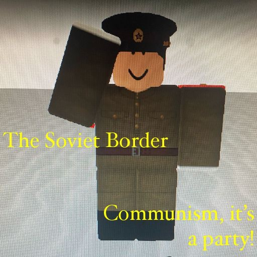

The game can be found here.
The original game project for The Soviet Border was a test game named "In development.". I had created it as a nuclear test site, but then made it into a border. It has come far from its original purpose, and even gaining a community. About R$8,000 (8,000 Robux) has been spent on it, mostly for groups and ranks. Click here to play the Roblox game. You can also find limited, holiday, seasonal, and event related gamepasses here.
